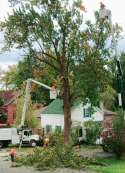

{kind=link}
Tom's
Felling large trees can be dangerous, which is why we use cutting edge equipment, techniques, and planning to execute the safest and most efficient cutting. We bring down large trees in small pieces and the safety of you, your family, your community and property our are hight priority.
{kind=link}
Company History
Family owned and operated, Tom's has been serving the Seattle area for 20 years. Working out of a home office in 1995, Tom and has since the business has grown to 20 employees.
Summary
Tom's Tree Trimming is privately owned and serves the greater Seattle area. Our top priority is safety and ensuring your satisfaction with our work.
We have over 100 years of combined experience and provide a variety of tree services. We are ISA certified, licensed, and bonded. Contact us today for a quote!
Trimming trees in an environmentally friendly manner is important to us. All left over debris is recycled into paper, mulch, and other products. We make sure nothing goes to waste.
Services
We offer a variety of services such as:
- Tree felling
- Thinning
- Trimming
- Pruning
- Shrub carving
- Stump removal and grinding
Our powerful wood chippers break down branches and stumps, and carry away all debris for recycling.Our goal is to leave your property cleaner than we found it.